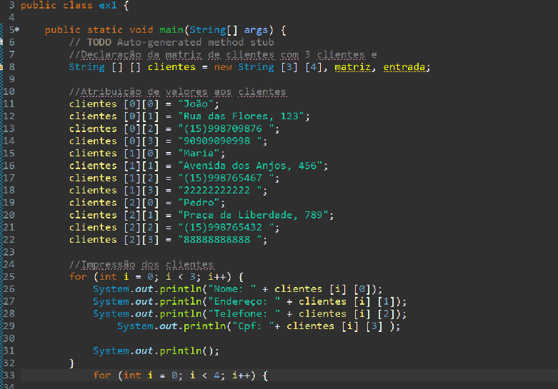
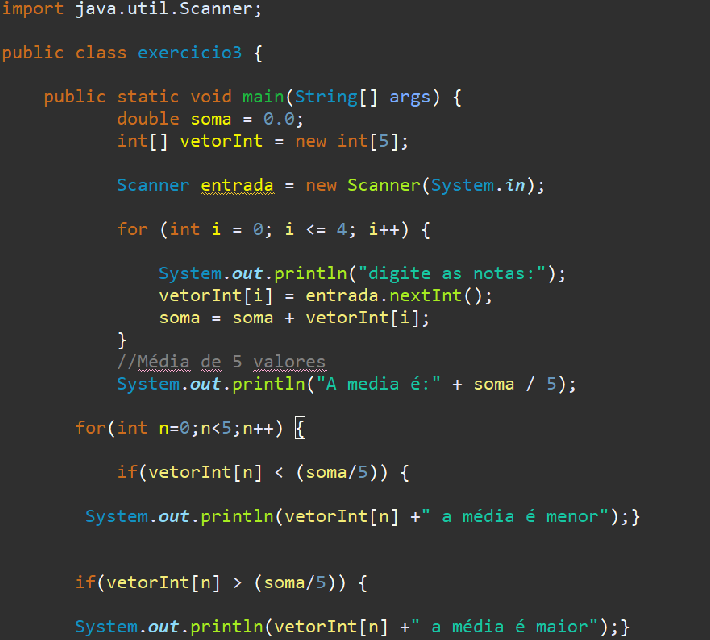
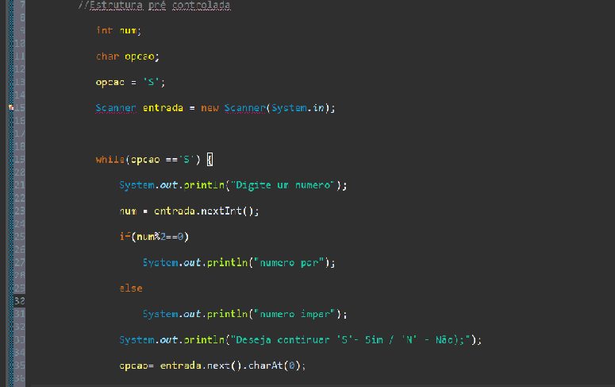
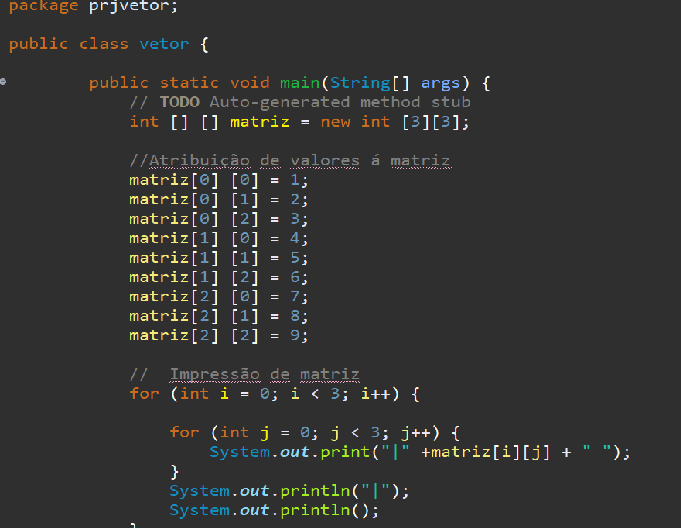

Programação orientada a objetos é um paradigma de programação baseado no conceito de "objetos", que podem conter dados na forma de campos, também conhecidos como atributos, e códigos, na forma de procedimentos, também conhecidos como métodos.
Uma matriz é um vetor de vetores, todos de mesmo tamanho. Em Java, é possível criar um vetor de vetores onde cada elemento tem um tamanho diferente. Nesse caso, cada elemento deve ser criado de forma independente. Todo vetor em Java tem o atributo length que define o seu número de elementos.
A Média Aritmética é uma maneira de descobrir o valor médio de uma série de números. Se você tem uma lista de números, você pode somá-los e depois dividir a soma pelo número total de números na lista. Isso dará a você a Média Aritmética. Quando a Média Aritmética é calculada dessa forma, ela é chamada de Média Aritmética Simples. É uma maneira simples e fácil de entender o que o conjunto de números em questão “representa” em termos de valor central.
A estrutura condicional if/else permite ao programa avaliar uma expressão como sendo verdadeira ou falsa e, de acordo com o resultado dessa verificação, executar uma ou outra rotina. Na linguagem Java o tipo resultante dessa expressão deve ser sempre um boolean, pois diferentemente das demais, o Java não converte null ou inteiros como 0 e 1 para os valores true ou false.
Vetores são estruturas de dados que armazenam usualmente uma quantidade fixa de dados de um certo tipo; por esta razão, também são conhecidos como estruturas homogêneas de dados. Internamente, um vetor armazena diversos valores, cada um associado a um número que se refere à posição de armazenamento, e é conhecido como índice. Os vetores são estruturas indexadas, em que cada valor que pode ser armazenado em uma certa posição (índice) é chamado de elemento do vetor.
Os algoritmos representam a forma de pensar de um computador, são instruções lógicas simples que permite ao computador tomar decisões